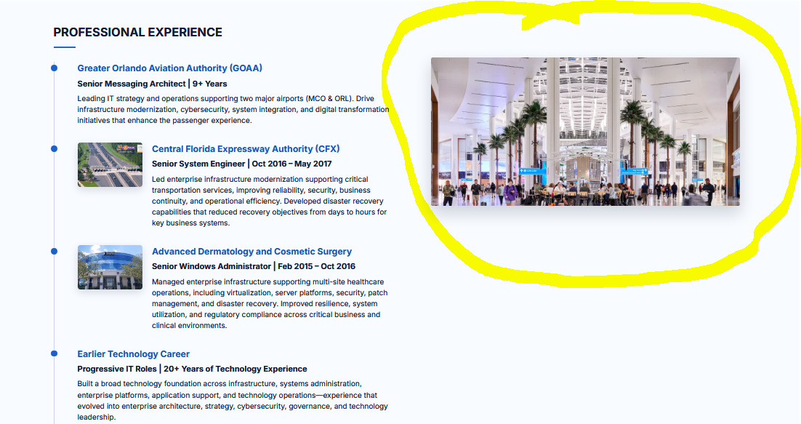
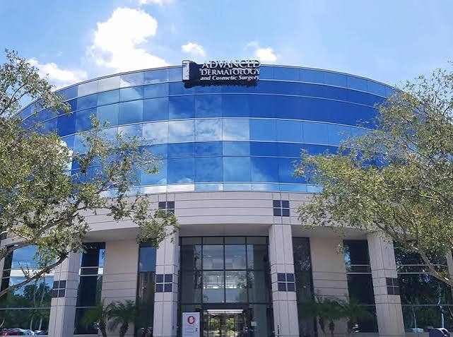

Strategic Thinker
Aligning IT strategy with business vision to drive long-term success.
I align technology, strategy, and people to lead enterprise transformation, strengthen organizations, and deliver measurable business outcomes.
Technology should do more than support the business—it should accelerate it. For more than 20 years, I have helped organizations transform technology into a strategic business advantage. I partner with executive leadership to align technology with business objectives, strengthen cybersecurity, modernize enterprise infrastructure, and deliver measurable business value.
What sets me apart is my ability to bridge the gap between technology and business—bringing people, strategy, and data together to solve complex challenges, improve operational performance, enhance customer experiences, and create lasting organizational impact. My leadership is grounded in integrity, collaboration, accountability, and continuous improvement, with a focus on empowering people, embracing innovation, and building relationships that move organizations forward.
Aligning IT strategy with business vision to drive long-term success.
Building strong relationships and empowering high-performing teams.
Delivering measurable outcomes that create real business impact.
Embracing emerging technologies to solve complex challenges.
Over two decades of progressive IT leadership in complex enterprise environments.
Led enterprise wide technology initiatives that modernized systems and improved operational efficiency.
Strengthened security posture and ensured compliance with industry standards and regulations.
Built and mentored high-performing teams focused on innovation, collaboration, and excellence.
Selected examples of enterprise transformation, modernization, resilience, and cross-functional technology leadership.
Modernizing a mission-critical enterprise messaging platform across multiple generations while protecting continuity, security, and organizational readiness.
View Case StudyAdvancing a complex hybrid environment toward cloud services through architecture, governance, identity integration, migration planning, and stakeholder alignment.
View Case StudyStrengthening enterprise messaging security and operational resilience through disciplined risk management, secure integrations, governance, and platform hardening.
View Case StudyConnecting technology teams, security, application owners, vendors, and leadership to deliver complex initiatives with shared accountability and business focus.
View Case Study
Leading IT strategy and operations supporting two major airports (MCO & ORL). Drive infrastructure modernization, cybersecurity, system integration, and digital transformation initiatives that enhance the passenger experience.
Led enterprise infrastructure modernization supporting critical transportation services, improving reliability, security, business continuity, and operational efficiency. Developed disaster recovery capabilities that reduced recovery objectives from days to hours for key business systems.

Managed enterprise infrastructure supporting multi-site healthcare operations, including virtualization, server platforms, security, patch management, and disaster recovery. Improved resilience, system utilization, and regulatory compliance across critical business and clinical environments.
Built a broad technology foundation across infrastructure, systems administration, enterprise platforms, application support, and technology operations—experience that evolved into enterprise architecture, strategy, cybersecurity, governance, and technology leadership.
🎓 Western Governors University
Master of Business Administration (MBA)
🎓 Western Governors University
Bachelor of Science in IT Management
🎓 John Jay College (CUNY)
General Studies / Criminal Justice
Have a leadership opportunity, strategic initiative, or collaboration in mind? Send me a message.